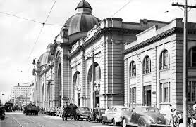

História do mercado
Inaugurado em 19 de julho de 1959, o Mercado Municipal foi construído pelo prefeito Abrahim Abraham para suprir a necessidade de um ponto de comércio em Americana, substituindo as feiras livres que eram realizadas no local. Além da população realizar suas compras e comer o tradicional pastel, o mercadão é um ponto de cultura e muita história. Recentemente, foi transformado em patrimônio sociocultural do município de Americana e passou a ser denominado Mercado Municipal "Luiza Padovani", homenageando a comerciante que há mais de 50 anos comanda uma loja agropecuária no local.
